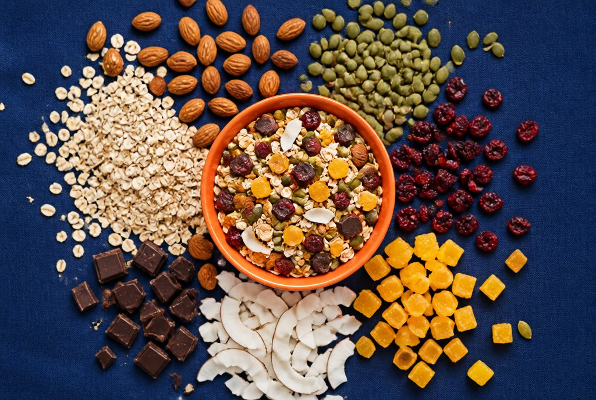

Source
Rolled oats are graded for flake size and moisture before they enter the plant. Seeds, nuts and freeze-dried fruit come from audited suppliers and are held in a separate cold store, away from the bakery floor.
What we check
- Oat flake thickness and moisture on every lot
- Supplier certificates for nuts and seeds
- Fruit is freeze-dried, never candied or sulphur-treated
- Allergen segregation: nuts stored on their own line
Why it matters
A thin, dry oat flake bakes into a crisp cluster. A soft one turns to dust. Grading at the door is the cheapest quality control in the building.
100%rolled oats, never instant0artificial coloursSeparatecold store for fruit
